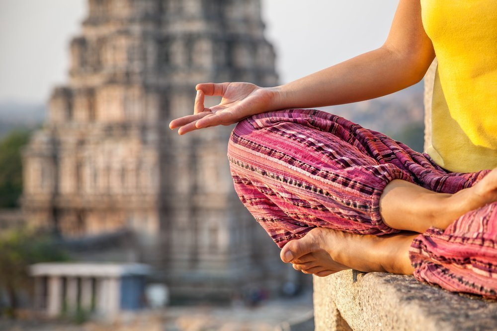
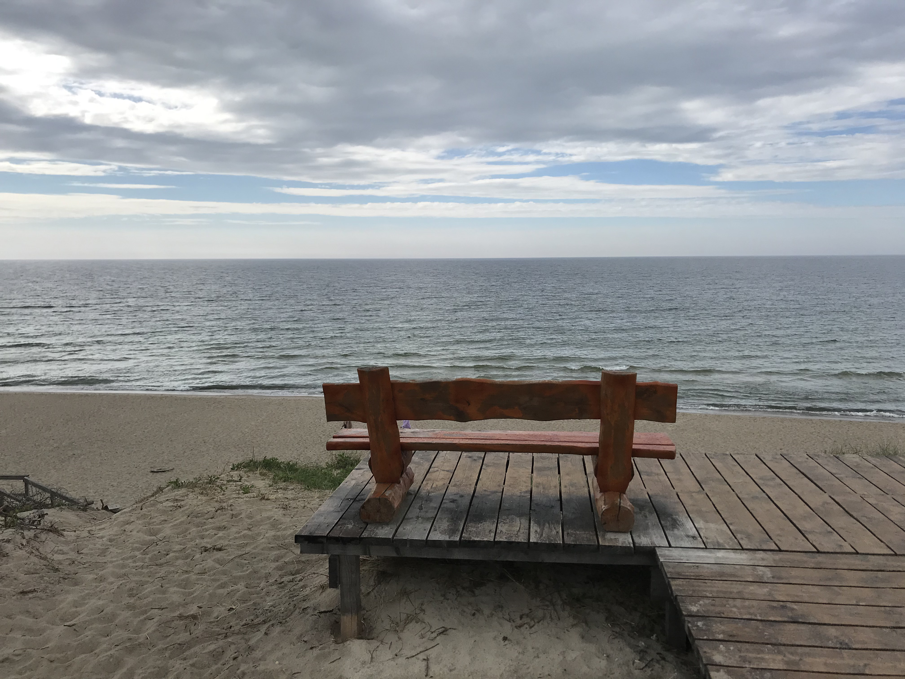

Йога-тур — новый способ отдыха
Предлагаем вашему вниманию йога-тур в Индию "Гоа"

Цель такого тура, в первую очередь- отдых, не просто в ленивом режиме. А отдых активный! Он заряжает энергией намного больше, чем обычный пляжный. После такого отпуска у тебя появляются силы на решение, казалось бы, сложных задач. В единицу времени ты способен выполнить больше, чем обычно. Если вы, например, никогда не бегали, то побережье – это лучшее место для начала. А практика йоги на берегу моря вообще ни с чем не сравнится!
Йога-тур на Балтийском море
Калиниград - Светлогорск

Этот йога тур соединяет в себе посещение и исследование самых потаенных уголков бывшего Кенингсберга и Раушена. Но мы не забудем и про йога погружение, чтобы максимально прочувствовать на себе силу Балтийского моря и природы Калинградской области.